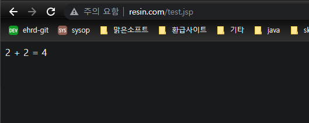

아파치 컴파일
apache에서 모듈을 불러오는 방식 중 하나로, DSO가 있다.
DSO는 한 번 아파치를 컴파일 한 뒤 추가로 모듈을 설치할 때 컴파일된 아파치를 계속 사용하는 것을 말한다.
DSO 를 지원하는 아파치 버전이 필요하다.
$ wget https://dlcdn.apache.org/httpd/httpd-2.4.54.tar.gz
$ tar xvfz httpd-2.4.54.tar.gz
apache의 소스 코드를 다운 받아 압축을 푼다.
$ ./configure--prefix=/usr/local/apache --enable-module=so
$ make
$ sudo make install
module 설정을 한 후 아파치를 설치한다.
make: *** No targets specified and no makefile found. Stop.
위와 같은 오류가 발생한 경우 configure가 제대로 되지 않은 것이다.
$ sudo yum -y install apr apr-devel apr-util apr-util-devel
apr을 설치한 뒤 다시 configure를 시도한다.
checking whether the C compiler works... no
이 경우는 gcc를 설치해준다.
$ sudo yum -y install gcc gcc-devel
mod_caucho.so 컴파일
$ wget http://caucho.com/download/resin-4.0.66.tar.gz
$ tar xvfz resin-4.0.66.tar.gz
$ ./configure --prefix=/usr/local/resin --with-apxs=/usr/local/apache/bin/apxs
$ make
$ make install
마찬가지로 레진의 소스 코드를 다운 받아 압축을 풀고 apxs와 관련된 설정을 해준다. apxs는 perl 스크립트로, resin으로 하여금 아파치 디렉토리들이 어떻게 설정되어 있는지 알 수 있도록 한다.
$ vi /etc/profile
RESIN_HOME=/usr/local/resin
export RESIN_HOME
위와 같이 환경변수 설정을 하면 레진의 경로를 쉽게 찾을 수 있다.
resin.xml 설정
caucho 모듈과 레진 서버와의 커뮤니케이션은 서버 포트를 이용해서 이루어진다.
<host id="resin.com" root-directory="/usr/local/apache">
<web-app id='/' document-directory="/usr/local/apache/htdocs"/>
</host>
위와 같이 apache의 document 디렉토리 경로를 설정해준다.
레진 서버를 시작해본다.
$ RESIN_HOME/bin/resin.sh start
httpd.conf
아래 내용을 추가해준다.
configure에 의해 일부는 자동으로 생성된다.
LoadModule caucho_module /usr/local/apache/modules/mod_caucho.so
ResinConfigServer localhost 6800
<Location /caucho-status>
SetHandler caucho-status
</Location>
CauchoConfigCacheDirectory /tmp
CauchoStatus yes
Include conf/extra/httpd-vhosts.conf
가상호스트를 사용한다.
extra/httpd-vhosts.conf 파일에
<VirtualHost 52.78.63.144>
DocumentRoot "/usr/local/apache/htdocs"
ServerName resin.com
<Directory "/usr/local/apache/htdocs">
Require all granted
</Directory>
</VirtualHost>
를 추가한다.
htdocs 아래에 test.jsp를 만들고 아래 내용을 넣는다.
2 + 2 = <%= 2 + 2 %>
resin.com/test.jsp 로 접속하면 다음과 같이 출력된다.
